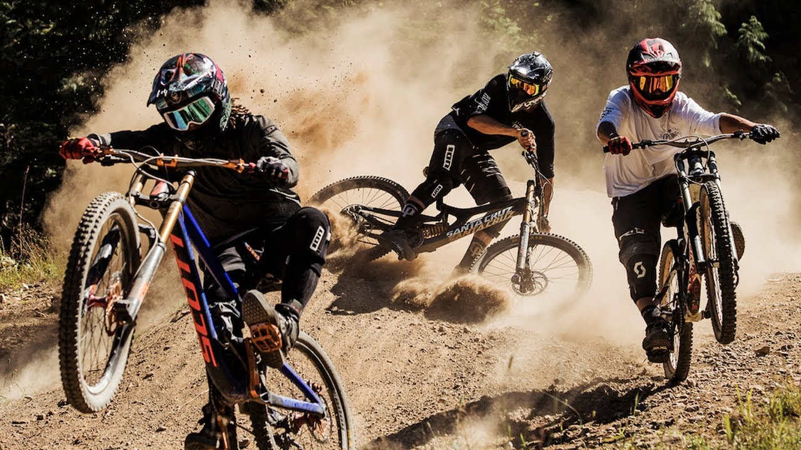
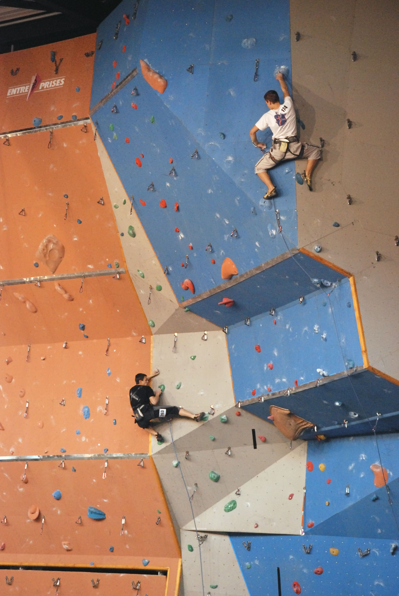
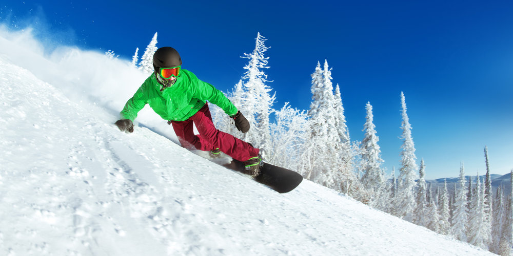

Downhill
A downhill egy olyan kerékpáros sport, ahol a lényeg az hogy speciális kerékpárokkal kell lejönni egy hegyen lévő pályáról, amin letörések, wallrideok döntött kanyarokon keresztül kell lejönni.
Falmászás
A falmászás egy olyan sport ahol egy épületben fa alapra csavaroztak kis kapaszkodókat és egy kötéllel kibiztosítva fel kell másznod a tetejére majd le.
Snowboard
A snowboard a legjobb létező télisport
